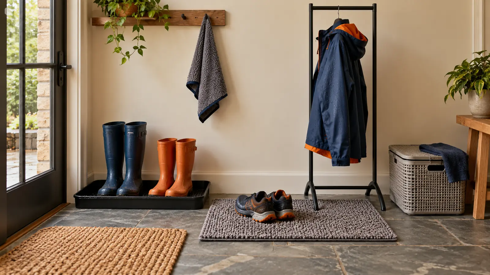

Shallow boot tray
Best for: concentrated mud, salt and snowmelt from a few pairs. Tradeoff: standing water still needs emptying, the lip can trip, and the base must suit the floor.
HOME SYSTEM · WET GEAR · AUTHORITY-EXPANSION
Wet boots do not need a prettier basket. They need a short path, a surface that protects the actual floor, enough space to dry, and a reset that still works on Tuesday night.

A boot tray catches concentrated drips. An absorbent mat handles the step-off zone. A rack gives coats and pants space instead of packing them into a wet knot. Most families do not need all three as new purchases. Start with the path from door to hook, use what already exists, and buy only the missing job.
This is a floor-and-airflow system, not a promise that gear will dry by morning. Materials, indoor humidity, boot liners, garment construction and ventilation all matter. The boot-dryer guide covers powered and passive equipment; this page deliberately stops at the landing zone.
Measure the widest pair and the number of pairs that truly arrive together. Compare inside dimensions, lip height, base texture, material, emptying grip, cleaning instructions and whether the maker allows the tray on the actual floor. A tall lip may contain more slush but can catch toes. A textured base may hold boots above water but take longer to scrub.
A tray is not permanent storage. Empty water before it becomes a dirty bath, remove salt and grit before they scratch flooring, and dry underneath on the schedule the floor needs. Do not set a tray against a heat source or over a vent unless every relevant manufacturer permits it.
Compare the usable absorbent area, backing, edge profile, laundering method, drying instructions and the floor maker’s restrictions. “Waterproof backing” does not prove the edges contain water or that trapped moisture is safe for hardwood. “Non-slip” is not universal across wet tile, sealed wood and grit.
Test one clean, dry mat in the actual place. It should lie flat, stay clear of the door and survive the family’s wash-and-dry routine. Lift it after every wet use until the household knows how quickly the floor beneath changes. Retire a curled, cracked or sliding mat.
Measure the footprint, total height, hook position and the maker’s stated load. Add the weight of wet coats, snow pants and packs—not just empty garments. Look for a stable base, instructions, smooth contact points and a way to keep long straps off the floor. Never let children climb, swing or pull on the rack.
A rack should create air gaps, not a dense wall of wet fabric. Place dripping items over a compatible catch surface and away from outlets, power strips, open flames, heaters and the main walking line. If the rack wobbles when one coat is removed, the setup is wrong even when the catalog photo looks tidy.
The landing zone starts after the weather decision. Use the family rain-gear guide to reduce avoidable saturation and the winter-boot fit guide before blaming the entryway for wet socks. Run the coat-pocket reset while jackets hang: tissues, wrappers and damp paper do not belong in a drying garment.
Put required medication, electronics and lithium batteries under the responsible adult’s storage rules—not in a dripping basket. Remove battery-powered lights from wet packs and inspect them according to their manuals before charging or storage.
Follow the product and flooring instructions for cleaners, laundering and drying. Do not mix cleaning chemicals. Ventilate the room appropriately for the home. If there is persistent dampness, visible growth, repeated floor damage, a plumbing leak or an electrical concern, stop treating the problem as an organizer purchase and contact the appropriate landlord, flooring professional, remediation professional or electrician.
Children can carry dry lightweight items and return their own shoes to a marked spot. Adults handle dirty standing water, harsh cleaners, damaged materials and any heavy or unstable rack. The system should reduce chores, not assign a child an unsafe cleanup.
Storm day: stage a second washable towel and an empty bucket before departure, but keep both out of the exit path. Low energy: tray the boots, hang one coat per hook, spread the rest over an approved stable rack and defer deep cleaning until morning. Apartment: use one narrow tray and over-door or wall storage only when the door, hardware and lease permit it. No mudroom: contain at the closest lawful surface, then move dry items to normal storage.
Skip a high-lip tray where feet or mobility devices catch it. Skip an absorbent mat when the floor manufacturer prohibits the backing or the household cannot dry it fully. Skip a freestanding rack in a tight exit route or around children who climb it. Skip all new purchases when an existing utility tray, washable towel and established hooks already pass the drip-path test.
Reviewed October 29, 2026. This framework relies on the exact flooring, garment and organizer manufacturers for material compatibility, loads, cleaning and placement; no universal tray, mat or rack claim is made. The drip-path test and category matrix are original editorial tools, not product testing, mold remediation, building-code advice or an electrical installation plan. Three commercial category links are comparison starting points only. Report corrections through About.
MAKE THE WEEK COUNT
Build the plan your family can finish well, then leave enough energy for the next part of the day.
More family plansTHE USEFUL STUFF
These are practical categories to compare—not a reason to overpack. Check fit, specifications and current reviews before buying.
Paid links: As an Amazon Associate I earn from qualifying purchases. You pay no additional cost.
Measure the inside footprint and lip, then verify material, floor compatibility, emptying grip and cleaning instructions for the actual entryway.
See current options → COMPARE ON AMAZONCompare usable area, backing, edge profile, laundering and drying instructions, and the floor maker's restrictions; no backing is non-slip on every wet surface.
See current options → COMPARE ON AMAZONCheck footprint, stated load, stability, hook geometry and assembly instructions with the real weight of wet coats and snow pants.
See current options →